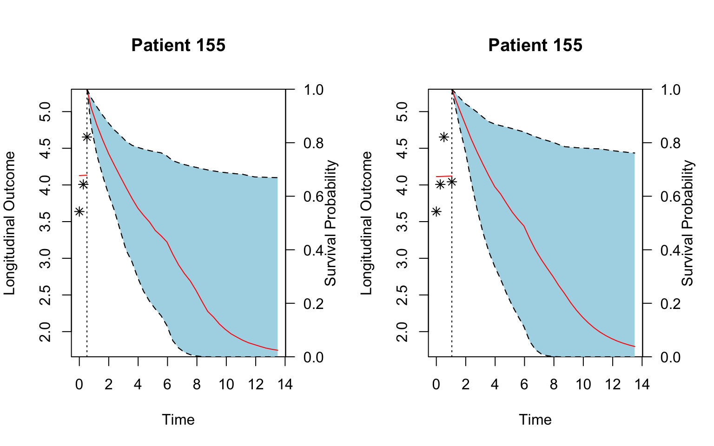

An introduction to joint modeling in R
J Espasandin, O Lado, C Díaz, A Bouzas, I Guler, A Baluja.  

These days, between the 19th and 21st of February, has taken place the learning activity titled “An Introduction to the Joint Modeling of Longitudinal and Survival Data, with Applications in R” organized by the Interdisciplinary Group of Biostatistics (ICBUSC), directed by Professor Carmen Cadarso-Suárez, from the University of Santiago de Compostela.
The international nature of this scientific activity has been marked by the presence of researchers from different European countries such as Germany, Portugal, Holland, Greece or Turkey. It also emphasizes its interdisciplinary nature, with attendees from different fields of research, such as statistics, biology, medicine, ecology or bioinformatics, belonging to different universities, biomedical institutions or the industry.
The training activity has been taught by the professor Dimitris Rizopoulos of the Erasmus University Medical Center in Rotterdam, specialist in joint-modeling techniques. Professor Rizopoulos is the author of a book on joint modeling, as well as numerous publications and two related R packages: JM and JMbayes.
The Joint Modeling techniques presented during the scientific meeting allow for the simultaneous study of longitudinal and time-to-event data. Longitudinal data includes repeated measurements of individuals over time, and time-to event data represent the expected time before an event occurs (like death, an asthma crisis or a transplant). That combination of data frequently arises in the biomedical sciences, where it is common to analyze the evolution of a sick person over time.
This novel statistical tool is especially useful in the field of biomedicine. For instance, in patient follow-up studies after surgery; to design a personalised pattern of medical visits; to carry out predictions of survival based on the evolution of a patient, or updating those predictions in light of new data; identification of useful biomarkers; prediction of patient outcome with different chronic diseases such as diabetes, some types of cancer or cardiovascular disease.
The applicability of these models has been illustrated through the JM and JMBayes R packages (by D Rizopoulos), as well as the packages joineR (by Philipson et al.), and lcmm (by Proust-Lima et al.)
An overview of joint modeling  
It basically combines (joins) the probability distributions from a linear mixed-effects model with random effects (which takes care of the longitudinal data) and a survival Cox model (which calculates the hazard ratio for an event from the censored data). The whole model and its parts can be extended in several ways:
- To find latent population heterogeneity (latent class joint models).
- Allow for multiple longitudinal markers.
- Allow for the analysis of multiple failure times. This is the case of competing risks and recurrent events (for instance, when a child develops asthma attacks, to find the risk of recurrence).
- Time-Dependent accelerated failure time (AFT) Models.
- Dynamic predictions when new values are added for the longitudinal variable, using Maximum Likelihood Estimates and empirical Bayes estimates.
Also, the JM package has functions for discrimination and callibration, (of a single marker and between models): sensitivity & specificity, time-dependent ROCs and AUC.
Applications for joint modeling    
Citing D. Rizopoulos:
Joint models for longitudinal and time-to-event data have become a valuable tool in the analysis of follow-up data. These models are applicable mainly in two settings: First, when the focus is on the survival outcome and we wish to account for the effect of an endogenous time-dependent covariate measured with error, and second, when the focus is on the longitudinal outcome and we wish to correct for nonrandom dropout.
Summary  
When we need joint models for longitudinal and survival outcomes?
To handle endogenous time-varying covariates in a survival analysis context
To account for nonrandom dropout in a longitudinal data analysis context
How joint models work?
A mixed model for the longitudinal outcome
A relative risk model for the event process
Explain interrelationships with shared random effects
Last but not least… a dynamic predicion GIF!    
library(JM)
# Animation example
# Mixed-effects model fit
lmeFit.p1 <- lme(log(pro) ~ time + time:treat, data = prothro,
random = ~ time | id)
# Cox survival model fit
survFit.p1 <- coxph(Surv(Time, death) ~ treat, data = prothros, x = TRUE)
# Joint model
jointFit.p1 <- jointModel(lmeFit.p1, survFit.p1, timeVar = "time",
method = "piecewise-PH-aGH")
# We are interested in producing predictions of survival probabilities for Patient 155
dataP155 <- prothro[prothro$id == 155, ]
len_id <- nrow(dataP155)
# We can plot the data
sfit3 <- survfitJM(jointFit.p1, newdata = dataP155[1:3, ])
sfit4 <- survfitJM(jointFit.p1, newdata = dataP155[1:4, ])
par(mfrow=c(1,2))
plotfit3 <- plot(sfit3, estimator="mean", include.y = TRUE, conf.int=0.95, fill.area=TRUE, col.area="lightblue", main="Patient 155")
plotfit4 <- plot(sfit4, estimator="mean", include.y = TRUE, conf.int=0.95, fill.area=TRUE, col.area="lightblue", main="Patient 155")
library(animation)
saveGIF({
for(i in c(1:len_id)){
sfit <- survfitJM(jointFit.p1, newdata = dataP155[1:i, ])
plot(sfit, estimator="mean", include.y = TRUE, conf.int=0.95, fill.area=TRUE, col.area="lightblue", main="Patient 1")
}
},ani.width = 400, ani.height=400)A great crowd over there!